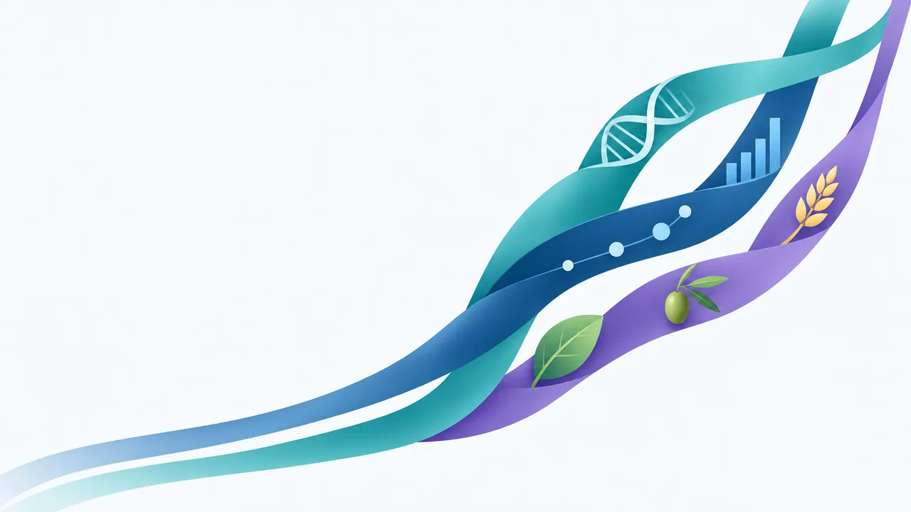

CESGEN Campus
Online courses in nutrigenomics, personalised nutrition, genomics and artificial intelligence, and data science for health. In English and in Spanish.
For everyone · for professionals · for researchers
AvailableGo to the campus →
On this GitHub account we publish the supporting code for the campus courses, such as the one on health data analysis with R, and for tools such as FoodTree, which we use in CESGEN blog posts.

This page is part of the CESGEN ecosystem: three lines of work, each with its own site.
Online courses in nutrigenomics, personalised nutrition, genomics and artificial intelligence, and data science for health. In English and in Spanish.
For everyone · for professionals · for researchers
The NutriGPT study: 48 wellness genetic variants across eight areas of nutrition and habits, analysed in our laboratory in Spain. Delivered to the practice as a data file, with a guide to interpret it.
For dietitians and health professionals
A decision-support system for the professional: it helps them read each client's genetic file with knowledge curated by CESGEN, within the limits of a wellness study. It proposes and cites its sources.
For professionals who apply the study in their practice
Code that goes with what we teach and publish, so you can run it, study it and reuse it.
Scripts, example data and notebooks from the campus courses, such as the one on health data analysis with R.
For learners on the campus courses
Phylogenetic-style trees of food products, built from their ingredient lists. Written in Python, MIT licence.
We use it in blog posts
The code for the tools and analyses we use in our blog posts, so you can repeat them step by step.
For readers of the CESGEN blog
Find the repository for the course or blog post you are interested in.
Clone it with Git, or download it as a ZIP from the repository’s Code button.
Follow the README, run the example and then try it with your own data.
# for example, with FoodTree
$ git clone https://github.com/cesgenes/foodtree.git
$ cd foodtree
$ less README.mdPublishing the code lets you check how a result is reached and repeat it with your own data. It is the same idea we follow at CESGEN: what we teach, analyse and apply has to be explainable and checkable.
About CESGENThe supporting code for the CESGEN campus courses, such as the one on health data analysis with R, and for tools we use in blog posts, such as FoodTree.
Each repository states its licence. FoodTree, for example, uses the MIT licence. If you are unsure about a specific use, get in touch through the contact form.
The courses are on the campus (campus.cesgen.com), the NutriGPT study in the laboratory (lab.cesgen.com) and DNAGPT at dnagpt.cesgen.com. General information is on cesgen.com.
Tell us who you are and we will explain how to start.
I’d like more informationLooking for the courses? Visit the CESGEN Campus.